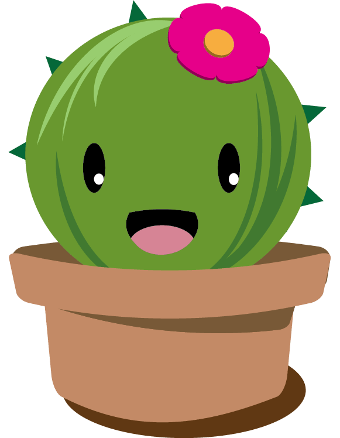

Na kateveneis mes ton psofo gia na paeis supermarket, na prp na diastaurwseis fwta pou en svista, na pieneis ws jiame j nan kleisto logw power outage epeidi fisa kai meta na perimeneis ksana mesa ston psofo gia to epomeno bus j na rkesai spiti j na sou akirwnei to date i alli.
